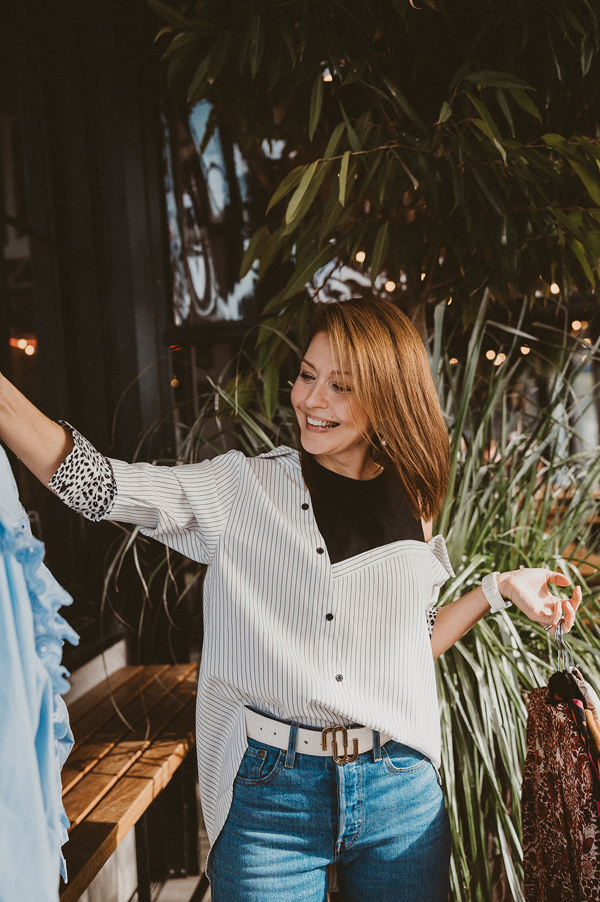

Are you feeling lost in your personal style and wearing clothes that don't make you feel amazing every day? Do you find shopping stressful and overwhelming?
No need to worry, I'm here to help! Let's embark on a shopping trip where I'll share with you my knowledge of where to shop and how to create outfits that truly reflect your unique personality and style.
This service is perfect for anyone who wants to elevate their style game but may not know where to start with their next shopping trip or has limited options in their current wardrobe. In no time, you'll confidently show up as the best version of yourself for any occasion.
Don't let your wardrobe hold you back from enjoying upcoming events, such as weddings, birthdays, or other special moments in life with your loved ones. Together, we can build a strong and functional wardrobe foundation, allowing you to feel more confident and comfortable in your own skin. After our Initial Style Consultation, I will curate a personalized shopping itinerary based on your style and pre-select items and outfits that are sure to suit your taste.
With my expertise and attention to detail, I'll guide you on the best fit, style, and colors that complement your unique body and personality. The result will be a fresh, timeless wardrobe that is uniquely yours and aligned with your true self. Let's work together to create a wardrobe that you'll love and feel confident in, so you can show up as the best version of yourself every day.The Personal Shopping service can take anywhere between 3-5 hours depending on your goals and the size of your shopping list.
STYLE CONSULTATION
When you work with me, we begin each package with an in-depth Style Consultation. This is a crucial starting point, as it allows me to gain an understanding of your personal style, lifestyle, likes and dislikes, and of course your budget for the whole experience. During this 30-minute session, we'll delve into what makes you unique, and what your wardrobe needs are, to ensure that the looks I create for you are tailored to your individual style. This step can be done virtually or in person. As personal styling is an intimate and personal service, my top priority is to ensure that you feel comfortable throughout the entire process.
This service also offers an add-on - LOOK BOOK option. A Look Book is like your own personal fashion diary! We create it together during our shopping session by mixing and matching your new pieces so that you are left with outfit combinations that perfectly represent your style. Imagine waking up every morning and having a virtual closet to flip through for your outfit inspiration - that's what a Look Book can do for you.